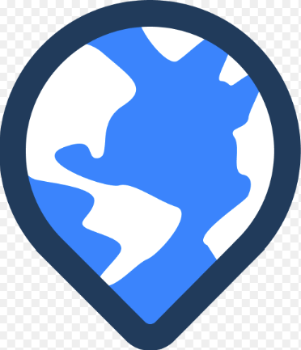

Patrick O'Shea
menu
About Me
Map Gallery
App/Tool Gallery
Interactive Project Map
Download Resume

About Me
Map Gallery
App/Tool Gallery
Interactive Project Map
Interactive Project Map
Explore Projects I've Completed